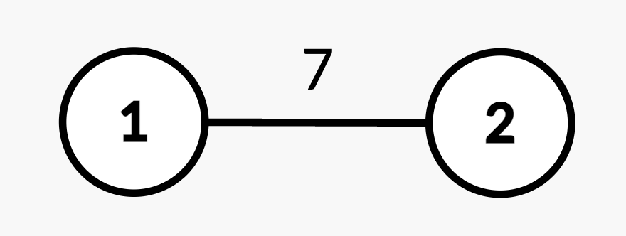
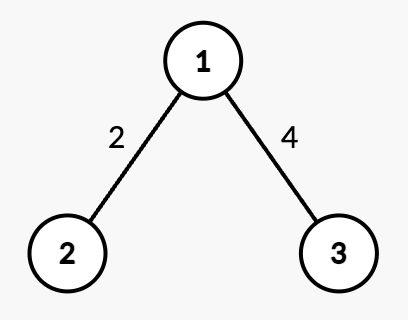
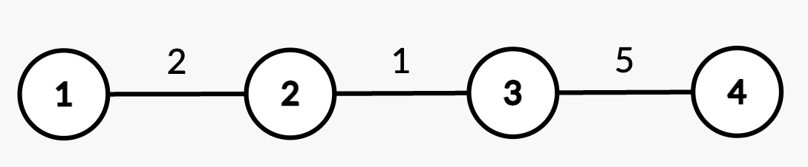

| Category | Difficulty | Likes | Dislikes |
|---|---|---|---|
| Algorithms | Hard | 61 | 2 |
array | tree | depth-first-search | binary-indexed-tree | segment-tree
juspay
You are given an integer n and an undirected, weighted tree rooted at node 1 with n nodes numbered from 1 to n. This is represented by a 2D array edges of length n - 1, where edges[i] = [ui, vi, wi] indicates an undirected edge from node ui to vi with weight wi.
You are also given a 2D integer array queries of length q, where each queries[i] is either:
[1, u, v, w'] – Update the weight of the edge between nodes u and v to w', where (u, v) is guaranteed to be an edge present in edges.[2, x] – Compute the shortest path distance from the root node 1 to node x.Return an integer array answer, where answer[i] is the shortest path distance from node 1 to x for the ith query of [2, x].
Example 1:
Input: n = 2, edges = [[1,2,7]], queries = [[2,2],[1,1,2,4],[2,2]]
Output: [7,4]
Explanation:

[2,2]: The shortest path from root node 1 to node 2 is 7.[1,1,2,4]: The weight of edge (1,2) changes from 7 to 4.[2,2]: The shortest path from root node 1 to node 2 is 4.Example 2:
Input: n = 3, edges = [[1,2,2],[1,3,4]], queries = [[2,1],[2,3],[1,1,3,7],[2,2],[2,3]]
Output: [0,4,2,7]
Explanation:

[2,1]: The shortest path from root node 1 to node 1 is 0.[2,3]: The shortest path from root node 1 to node 3 is 4.[1,1,3,7]: The weight of edge (1,3) changes from 4 to 7.[2,2]: The shortest path from root node 1 to node 2 is 2.[2,3]: The shortest path from root node 1 to node 3 is 7.Example 3:
Input: n = 4, edges = [[1,2,2],[2,3,1],[3,4,5]], queries = [[2,4],[2,3],[1,2,3,3],[2,2],[2,3]]
Output: [8,3,2,5]
Explanation:

[2,4]: The shortest path from root node 1 to node 4 consists of edges (1,2), (2,3), and (3,4) with weights 2 + 1 + 5 = 8.[2,3]: The shortest path from root node 1 to node 3 consists of edges (1,2) and (2,3) with weights 2 + 1 = 3.[1,2,3,3]: The weight of edge (2,3) changes from 1 to 3.[2,2]: The shortest path from root node 1 to node 2 is 2.[2,3]: The shortest path from root node 1 to node 3 consists of edges (1,2) and (2,3) with updated weights 2 + 3 = 5.
Constraints:
1 <= n <= 105edges.length == n - 1edges[i] == [ui, vi, wi]1 <= ui, vi <= n1 <= wi <= 104edges represents a valid tree.1 <= queries.length == q <= 105queries[i].length == 2 or 4
queries[i] == [1, u, v, w'] or,queries[i] == [2, x]1 <= u, v, x <= n(u, v) is always an edge from edges.1 <= w' <= 104